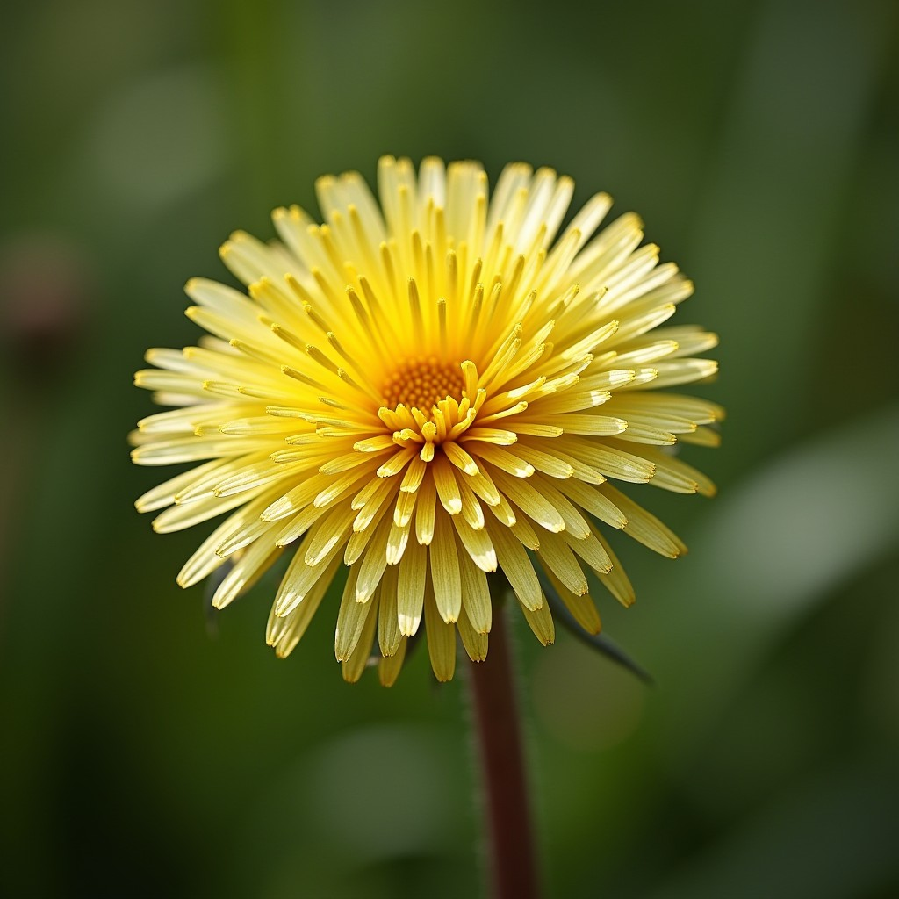

Dandelion
Represents freedom, hope, and joy. In love, it symbolizes a free and carefree love.
Dandelion, you are the freedom my soul craves. Your carefree joy fills me with love and hope.

Represents freedom, hope, and joy. In love, it symbolizes a free and carefree love.
Dandelion, you are the freedom my soul craves. Your carefree joy fills me with love and hope.